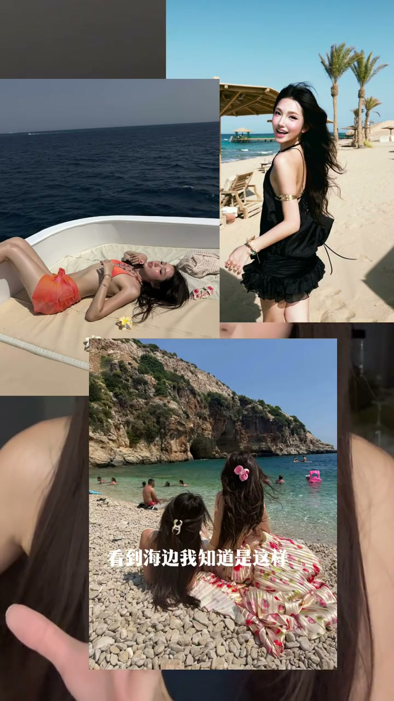
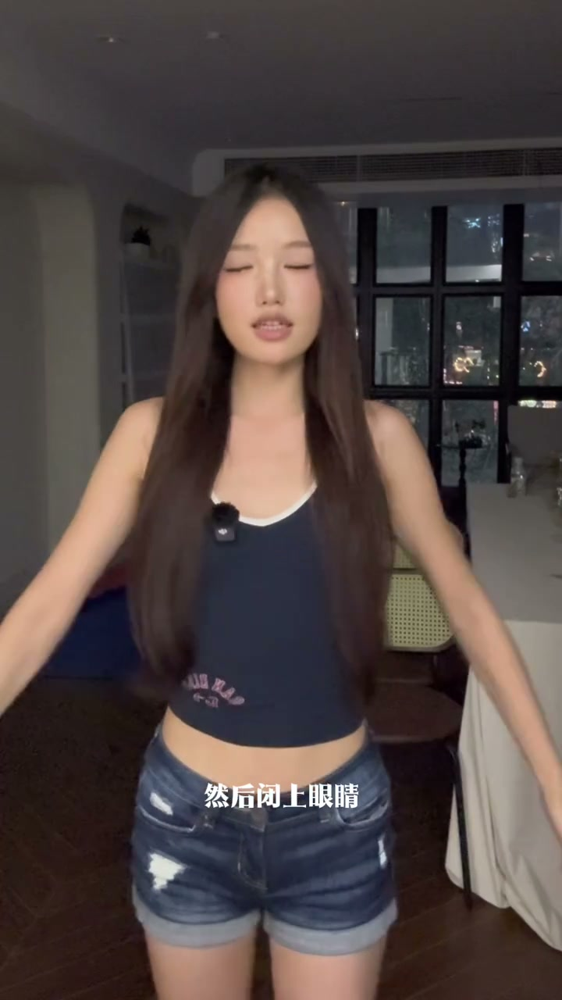
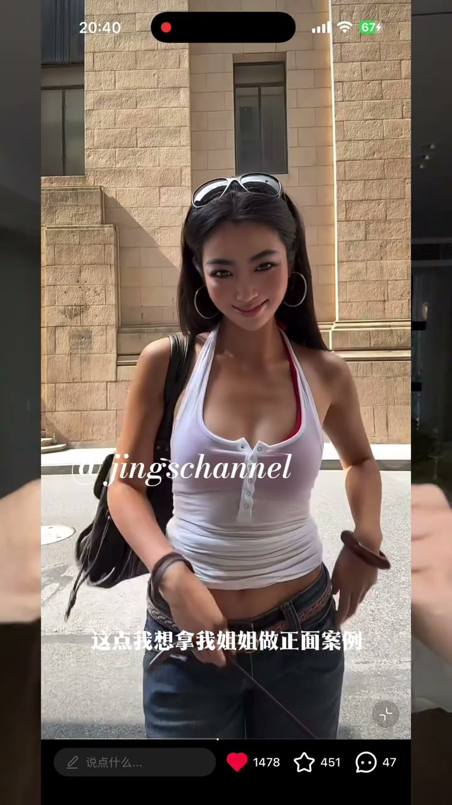
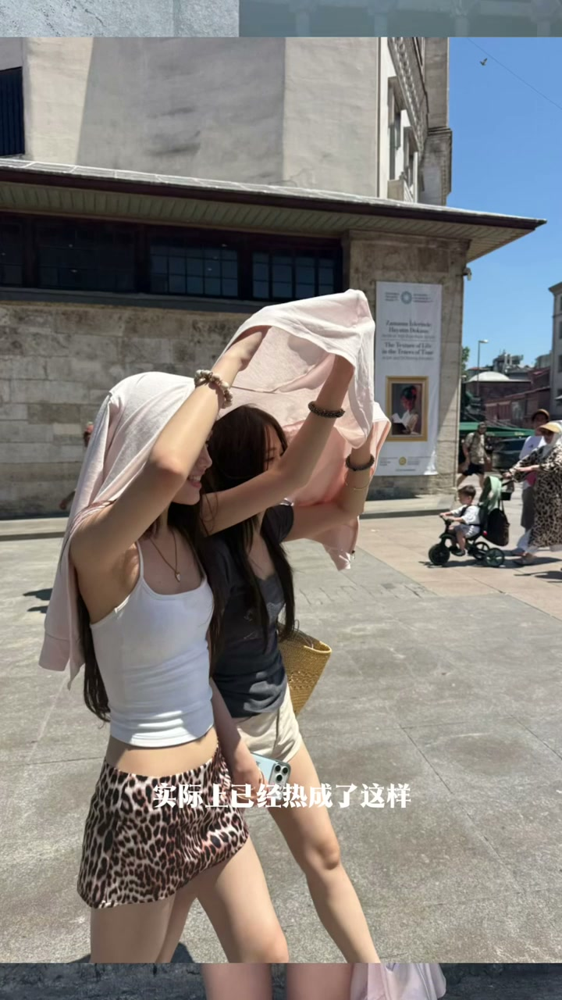
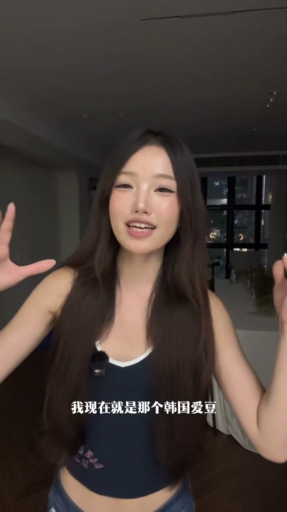
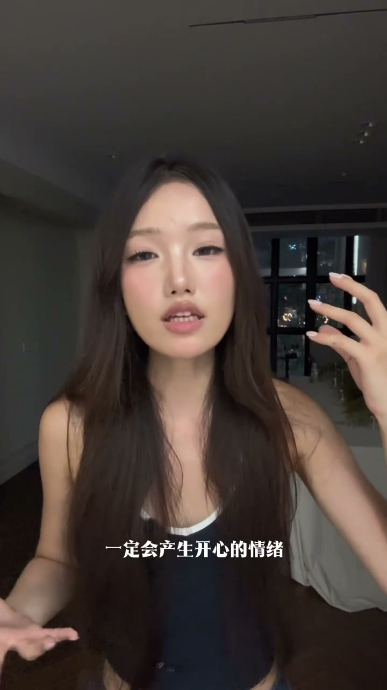

开场：同一人，两种照片
00:00这个是我闺蜜在日本拍的，这个是这次旅游我手把手教她拍的——对比一目了然。闺蜜问：你这些姿势到底是怎么想出来的？
00:11看到海边知道怎么拍、到景点也不是游客打卡照。有人会说“你这不是在国外吗，随便出片”，博主举例：去年在英国拍的，那时还没想做博主，是研究了一整年怎么拍照才拍出来的。

秘诀一：多看多记多背
00:25三个秘诀之一：多看多记多背。多看多记好说——直接打开博主收藏夹，餐厅拍照、生日千金感、韩系亚裔风格，统统分好类，多看就行。
00:40最关键的是“多背”：出门前一周一直训练。喜欢一个姿势，对镜子摆，觉得漂亮；但面对镜头时你看不到自己。所以训练方法：对镜摆好→闭上眼睛立正→再摆出那个姿势→睁眼对比——反复训练，直到身体记住这个姿势。

秘诀二：体态管理
01:04体态管理：如果有头前倾的问题，加上圆肩驼背，你根本不可能出片。
01:13拿姐姐做正面案例：随便走两下都有model感。体态管理到位，走在路上随便卡两张都出片。

秘诀三：表情管理
01:24表情管理是很多人忽略的：大部分拍照时不舒适，表情很容易变成皱眉苦脸。比如拍漂亮饭时肚子其实很饿，化了全妆赶到餐厅看到一桌菜还不能吃。
01:42例图：实际热成那样，但照片表情却很享受。因为观众看到照片会产生共情——表情痛苦、姿势不享受，观众潜意识就不会觉得这是好照片。

心态：足够自恋，足够不要脸
01:57在外面拍照，心里会想“别人都看我，好尴尬”——这种心态下不可能有好表情和舒展体态。要足够自恋、足够不要脸，心里默念：我现在就是韩国idol，我就是全世界最美。
02:23博主所有出片照片周围其实非常多的人看着。没办法，你必须享受拍照这个过程——这样眼神才有故事感。

表情与情绪的闭环 + P图边界
02:33表情和情绪的调动是相辅相成的：你大笑，一定会产生开心的情绪；你开心，面部表情更松弛自然。训练拍照眼神，最基础的是爱上拍照这件事。
02:50前置人模人样、后置狗模狗样，没关系，P图就好了——但表情、姿势这些是P不了的。只要表情放松、姿势松弛，其他都交给P图；不会P可以看博主其他教程。
